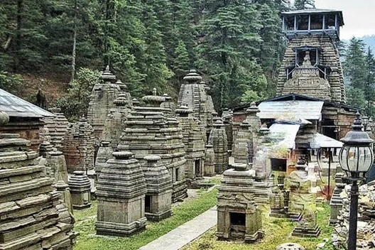
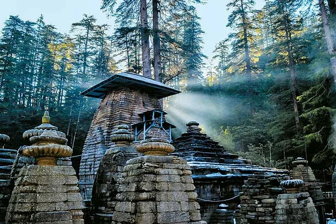
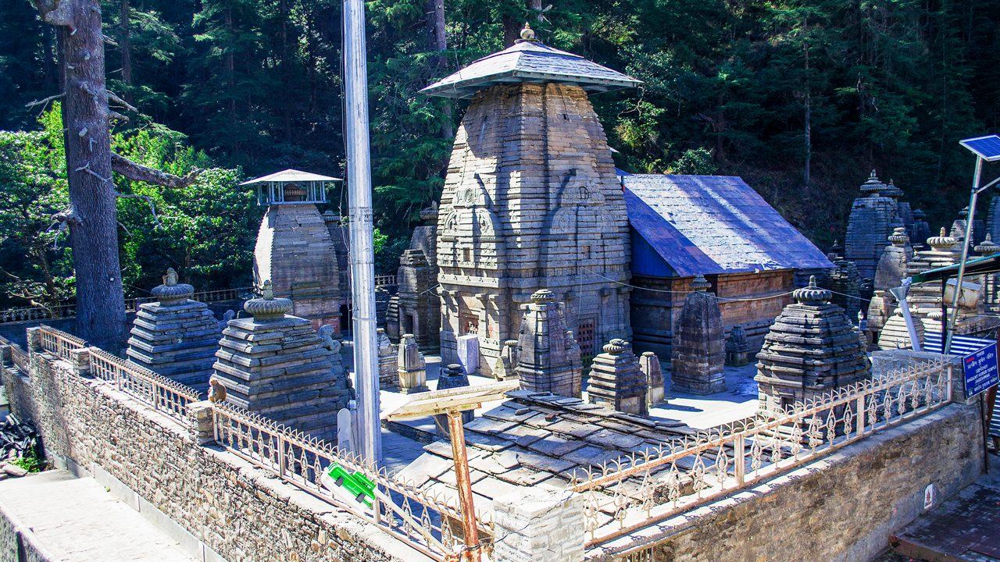
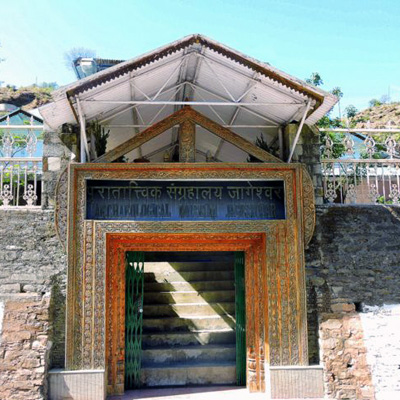
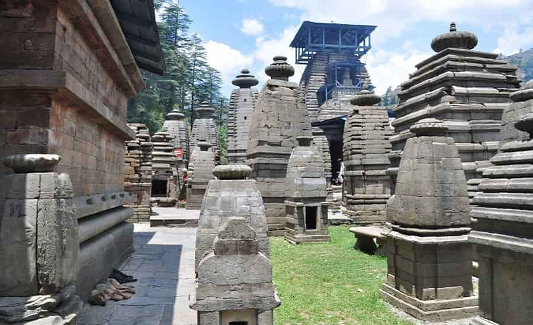
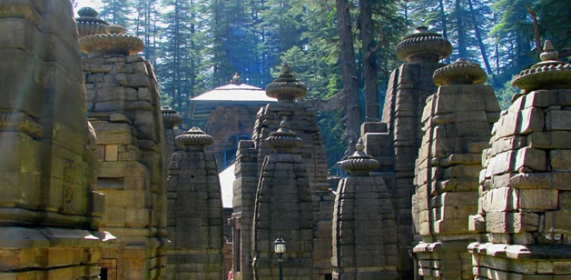
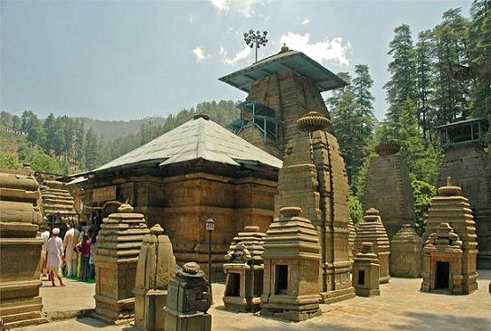
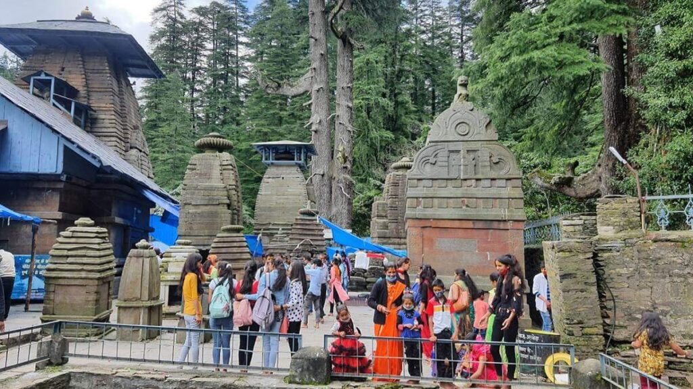

Jageshwar Temple Complex (also known as Jageshwar Dham) is one of the most sacred and archaeologically significant pilgrimage sites in the Kumaon region of Almora, Uttarakhand. Nestled in the serene Jataganga River valley at an altitude of about 1,870 meters, this "Valley of Gods" features a stunning cluster of over 124 ancient stone temples, predominantly dedicated to Lord Shiva. Protected by the Archaeological Survey of India (ASI), these temples date back to the post-Gupta and pre-medieval eras (7th–14th centuries), with some structures possibly over 2,500 years old, showcasing exquisite Nagara-style architecture, intricate carvings, towering shikharas, and hundreds of sculptures of Shiva, Parvati, and other deities.
Revered as one of the twelve Jyotirlingas (specifically linked to the Nagesh or Mahamrityunjaya form), Jageshwar holds profound spiritual importance — believed to be where Lord Shiva meditated, and a historic halt on the ancient Kailash-Mansarovar Yatra route. The main shrine houses a powerful natural rock Shiva Linga, while surrounding temples like Mahamrityunjaya (famous for Maha Mrityunjaya Pooja for longevity and healing), Dandeshwar (the largest), Mritunjaya (the oldest), and others dedicated to Surya, Navagraha, Kuber, and more create an atmosphere of timeless devotion. Surrounded by dense deodar and pine forests, with the gentle flow of Jat Ganga and Himalayan views, Jageshwar offers deep peace, spiritual cleansing, moksha vibes, and a profound connection to ancient Shaivism — drawing devotees, historians, and nature lovers alike.
April to June for pleasant weather and easy exploration; September to November for clear skies, lush post-monsoon greenery, and crisp Himalayan air. Avoid heavy monsoon (July–August) due to slippery paths and potential landslides. Early mornings offer quieter darshan; festivals like Shivratri (spring) and Jageshwar Monsoon Festival (August) bring vibrant energy and crowds.
Cluster of 124+ ancient Shiva temples in Nagara style, Mahamrityunjaya Temple for healing poojas, main Jageshwar Mahadev shrine with natural linga, Dandeshwar Temple (largest), intricate carvings and sculptures, Archaeological Museum nearby, serene forest trails, and valley views — perfect for darshan, meditation, photography, and spiritual reflection. Nearby Chitai adds to the pilgrimage circuit.
Wear comfortable walking shoes for exploring the spread-out complex, carry water/snacks as facilities are basic, maintain silence and respect the sanctity, perform darshan early to avoid crowds, consider Maha Mrityunjaya Pooja if seeking blessings for health/longevity, dress modestly, and stay in nearby eco-resorts or Almora for a peaceful overnight experience.
"In the hushed embrace of ancient stones and whispering deodars, Jageshwar whispers the eternal truth — where Shiva's presence lingers in every carved pillar, every flowing stream, and every silent prayer, inviting the soul to dissolve into the infinite light of divine grace."